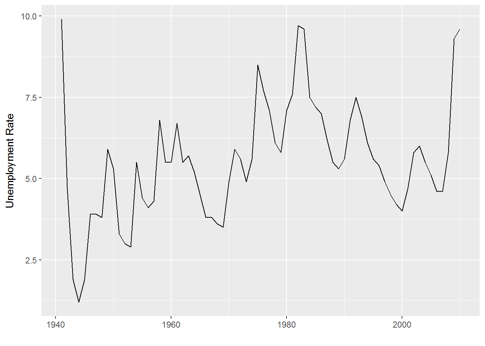
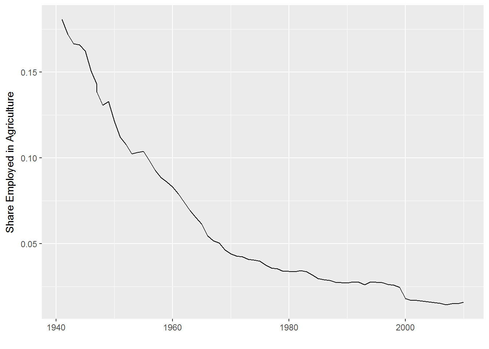

Learning Objectives
- Describe what a data frame is.
- Load external data from a .csv file into a data frame in R.
- Summarize the contents of a data frame in R.
- Manipulate categorical data in R.
- Change how character strings are handled in a data frame.
We are studying the labor force in the United States from 1941 to 2010.1 The dataset is stored as a comma separated value (CSV) file. Each row holds labor force information for a single year, and the column represent:
| Column |
|---|
| year of observation |
| civilian noninstitutional population |
| total civilian labor force |
| percent of population |
| total employed |
| percent of employed population |
| population employed in agriculture |
| population employed in non-agriculture |
| unemployment |
| percent of unemployed in labor force |
| not in labor force |
| notes on data |
| president (majority of the year) |
| political party of the president |
To download the data into the data/ subdirectory, run the following:
download.file("https://raw.githubusercontent.com/economics-datacarpentry/R-economics-lesson/gh-pages/data/aat1.csv", "data/aat1.csv")We are going to use the R function read.csv() to read the CSV file that contains the labor force data to load into memory the content of the CSV file as an object of class data.frame.
Load the data from the data/ subdirectory:
unemp <- read.csv('data/aat1.csv')This statement doesn’t produce any output because, as you might recall, assignments don’t display anything. If we want to check that our data has been loaded, we can print the variable’s value: unemp.
Wow… that was a lot of output. At least it means the data loaded properly. Let’s check the top (the first 6 lines) of this data frame using the function head():
head(unemp)## year.of.observation civilian.noninstitutional.population
## 1 1941 99900
## 2 1942 98640
## 3 1943 94640
## 4 1944 93220
## 5 1945 94090
## 6 1946 103070
## total.civilian.labor.force percent.of.population total.employed
## 1 55910 56.0 50350
## 2 56410 57.2 53750
## 3 55540 58.7 54470
## 4 54630 58.6 53960
## 5 53860 57.2 52820
## 6 57520 55.8 55250
## percent.of.employed.population population.employed.in.agriculture
## 1 50.4 9100
## 2 54.5 9250
## 3 57.6 9080
## 4 57.9 8950
## 5 56.1 8580
## 6 53.6 8320
## population.employed.in.non.agriculture unemployment
## 1 41250 5560
## 2 44500 2660
## 3 45390 1070
## 4 45010 670
## 5 44240 1040
## 6 46930 2270
## percent.of.unemployed.in.labor.force not.in.labor.force notes.on.data
## 1 9.9 43990 NA
## 2 4.7 42230 NA
## 3 1.9 39100 NA
## 4 1.2 38590 NA
## 5 1.9 40230 NA
## 6 3.9 45550 NA
## president..majority.of.the.year. political.party.of.the.president
## 1 roosevelt Democratic
## 2 roosevelt Democratic
## 3 roosevelt Democratic
## 4 roosevelt Democratic
## 5 truman Democratic
## 6 truman DemocraticThe variable names in the csv, though very descriptive, are not friendly to type. So we might like to rename the variables.
# new names for the columns
short_names <- c('year',
'civ_noninst_pop',
'civ_lf_tot',
'pct_pop',
'emp_tot',
'emp_pct_pop',
'emp_ag_tot',
'emp_nonag_tot',
'unemp',
'unemp_pct_lf',
'not_in_lf',
'footnotes',
'president',
'party')
# now rename the variables
names(unemp) <- short_namesNow that it is saved, let’s keep working with the data and see what we else can do. The dplyr package is an excellent way to manipulate data frame and summarize data.
library(dplyr)##
## Attaching package: 'dplyr'## The following objects are masked from 'package:stats':
##
## filter, lag## The following objects are masked from 'package:base':
##
## intersect, setdiff, setequal, unionunemp %>% summarise(first=min(year),last=max(year))## first last
## 1 1941 2010The dplyr %>% notation means, take the output of the thing on the left and pass it to the thing on the right. It is a fancy way of doing function composition. Instead of writing f(g(h(x))) we can write x %>% h() %>% g() %>% f(). Writing it this way makes it easier to remove g() if we don’t want it to be part of the pipeline of operations anymore.
We can also plot the unemployment rate easily with the ggplot2 package. I give you the following code without much explanation, but it will be covered in a later lesson.
library(ggplot2)
unemp %>%
ggplot(aes(year,unemp_pct_lf)) +
geom_line() + labs(y="Unemployment Rate",x="")
By slightly altering the code above, we can also plot the share of those employed in agriculture. We would expect to see it drop over time.
unemp %>%
ggplot(aes(year,emp_ag_tot/emp_tot)) +
geom_line() + labs(y="Share Employed in Agriculture",x="")
Data frames are the de facto data structure for most tabular data, and what we use for statistics and plotting.
A data frame can be created by hand, but most commonly they are generated by the functions read.csv() or read.table(); in other words, when importing spreadsheets from your hard drive (or the web).
A data frame is the representation of data in the format of a table where the columns are vectors that all have the same length. Because the column are vectors, they all contain the same type of data (e.g., characters, integers, factors). We can see this when inspecting the structure of a data frame with the function str():
str(unemp)## 'data.frame': 71 obs. of 14 variables:
## $ year : int 1941 1942 1943 1944 1945 1946 1947 1947 1948 1949 ...
## $ civ_noninst_pop: int 99900 98640 94640 93220 94090 103070 106018 101827 103068 103994 ...
## $ civ_lf_tot : int 55910 56410 55540 54630 53860 57520 60168 59350 60621 61286 ...
## $ pct_pop : num 56 57.2 58.7 58.6 57.2 55.8 56.8 58.3 58.8 58.9 ...
## $ emp_tot : int 50350 53750 54470 53960 52820 55250 57812 57038 58343 57651 ...
## $ emp_pct_pop : num 50.4 54.5 57.6 57.9 56.1 53.6 54.5 56 56.6 55.4 ...
## $ emp_ag_tot : int 9100 9250 9080 8950 8580 8320 8256 7890 7629 7658 ...
## $ emp_nonag_tot : int 41250 44500 45390 45010 44240 46930 49557 49148 50714 49993 ...
## $ unemp : int 5560 2660 1070 670 1040 2270 2356 2311 2276 3637 ...
## $ unemp_pct_lf : num 9.9 4.7 1.9 1.2 1.9 3.9 3.9 3.9 3.8 5.9 ...
## $ not_in_lf : int 43990 42230 39100 38590 40230 45550 45850 42477 42447 42708 ...
## $ footnotes : int NA NA NA NA NA NA NA NA NA NA ...
## $ president : Factor w/ 13 levels "bush i","bush ii",..: 12 12 12 12 13 13 13 13 13 13 ...
## $ party : Factor w/ 2 levels "Democratic","Republican": 1 1 1 1 1 1 1 1 1 1 ...data.frame ObjectsWe already saw how the functions head() and str() can be useful to check the content and the structure of a data frame. Here is a non-exhaustive list of functions to get a sense of the content/structure of the data. Let’s try them out!
dim(unemp) - returns a vector with the number of rows in the first element, and the number of columns as the second element (the dimensions of the object)nrow(unemp) - returns the number of rowsncol(unemp) - returns the number of columnshead(unemp) - shows the first 6 rowstail(unemp) - shows the last 6 rowsnames(unemp) - returns the column names (synonym of colnames() for data.frame objects)rownames(unemp) - returns the row namesstr(unemp) - structure of the object and information about the class, length and content of each columnsummary(unemp) - summary statistics for each columnNote: most of these functions are “generic”, they can be used on other types of objects besides data.frame.
Challenge
Based on the output of
str(unemp), can you answer the following questions?
- What is the class of the object
unemp?- How many rows and how many columns are in this object?
- How many species have been recorded during these unemp?
Our unemp data frame has rows and columns (2 dimensions). If we want to extract some specific data from it, we need to specify the “coordinates” we want from it. Row numbers come first, followed by column numbers. However, note that different ways of specifying these coordinates lead to results with different classes.
unemp[1] # first column in the data frame (as a data.frame)## year
## 1 1941
## 2 1942
## 3 1943
## 4 1944
## 5 1945
## 6 1946
## 7 1947
## 8 1947
## 9 1948
## 10 1949
## 11 1950
## 12 1951
## 13 1952
## 14 1953
## 15 1954
## 16 1955
## 17 1956
## 18 1957
## 19 1958
## 20 1959
## 21 1960
## 22 1961
## 23 1962
## 24 1963
## 25 1964
## 26 1965
## 27 1966
## 28 1967
## 29 1968
## 30 1969
## 31 1970
## 32 1971
## 33 1972
## 34 1973
## 35 1974
## 36 1975
## 37 1976
## 38 1977
## 39 1978
## 40 1979
## 41 1980
## 42 1981
## 43 1982
## 44 1983
## 45 1984
## 46 1985
## 47 1986
## 48 1987
## 49 1988
## 50 1989
## 51 1990
## 52 1991
## 53 1992
## 54 1993
## 55 1994
## 56 1995
## 57 1996
## 58 1997
## 59 1998
## 60 1999
## 61 2000
## 62 2001
## 63 2002
## 64 2003
## 65 2004
## 66 2005
## 67 2006
## 68 2007
## 69 2008
## 70 2009
## 71 2010unemp[, 1] # first column in the data frame (as a vector)## [1] 1941 1942 1943 1944 1945 1946 1947 1947 1948 1949 1950 1951 1952 1953
## [15] 1954 1955 1956 1957 1958 1959 1960 1961 1962 1963 1964 1965 1966 1967
## [29] 1968 1969 1970 1971 1972 1973 1974 1975 1976 1977 1978 1979 1980 1981
## [43] 1982 1983 1984 1985 1986 1987 1988 1989 1990 1991 1992 1993 1994 1995
## [57] 1996 1997 1998 1999 2000 2001 2002 2003 2004 2005 2006 2007 2008 2009
## [71] 2010unemp[1, 1] # first element in the first column of the data frame (as a vector)## [1] 1941unemp[1, 6] # first element in the 6th column (as a vector)## [1] 50.4unemp[1:3, 7] # first three elements in the 7th column (as a vector)## [1] 9100 9250 9080unemp[3, ] # the 3rd element for all columns (as a data.frame)## year civ_noninst_pop civ_lf_tot pct_pop emp_tot emp_pct_pop emp_ag_tot
## 3 1943 94640 55540 58.7 54470 57.6 9080
## emp_nonag_tot unemp unemp_pct_lf not_in_lf footnotes president
## 3 45390 1070 1.9 39100 NA roosevelt
## party
## 3 Democratichead_unemp <- unemp[1:6, ] # equivalent to head(unemp): is a special function that creates numeric vectors of integers in increasing or decreasing order, test 1:10 and 10:1 for instance.
You can also exclude certain parts of a data frame using the “-” sign:
unemp[,-1] # The whole data frame, except the first column## civ_noninst_pop civ_lf_tot pct_pop emp_tot emp_pct_pop emp_ag_tot
## 1 99900 55910 56.0 50350 50.4 9100
## 2 98640 56410 57.2 53750 54.5 9250
## 3 94640 55540 58.7 54470 57.6 9080
## 4 93220 54630 58.6 53960 57.9 8950
## 5 94090 53860 57.2 52820 56.1 8580
## 6 103070 57520 55.8 55250 53.6 8320
## 7 106018 60168 56.8 57812 54.5 8256
## 8 101827 59350 58.3 57038 56.0 7890
## 9 103068 60621 58.8 58343 56.6 7629
## 10 103994 61286 58.9 57651 55.4 7658
## 11 104995 62208 59.2 58918 56.1 7160
## 12 104621 62017 59.2 59961 57.3 6726
## 13 105231 62138 59.0 60250 57.3 6500
## 14 107056 63015 58.9 61179 57.1 6260
## 15 108321 63643 58.8 60109 55.5 6205
## 16 109683 65023 59.3 62170 56.7 6450
## 17 110954 66552 60.0 63799 57.5 6283
## 18 112265 66929 59.6 64071 57.1 5947
## 19 113727 67639 59.5 63036 55.4 5586
## 20 115329 68369 59.3 64630 56.0 5565
## 21 117245 69628 59.4 65778 56.1 5458
## 22 118771 70459 59.3 65746 55.4 5200
## 23 120153 70614 58.8 66702 55.5 4944
## 24 122416 71833 58.7 67762 55.4 4687
## 25 124485 73091 58.7 69305 55.7 4523
## 26 126513 74455 58.9 71088 56.2 4361
## 27 128058 75770 59.2 72895 56.9 3979
## 28 129874 77347 59.6 74372 57.3 3844
## 29 132028 78737 59.6 75920 57.5 3817
## 30 134335 80734 60.1 77902 58.0 3606
## 31 137085 82771 60.4 78678 57.4 3463
## 32 140216 84382 60.2 79367 56.6 3394
## 33 144126 87034 60.4 82153 57.0 3484
## 34 147096 89429 60.8 85064 57.8 3470
## 35 150120 91949 61.3 86794 57.8 3515
## 36 153153 93774 61.2 85846 56.1 3408
## 37 156150 96158 61.6 88752 56.8 3331
## 38 159033 99008 62.3 92017 57.9 3283
## 39 161910 102250 63.2 96048 59.3 3387
## 40 164863 104962 63.7 98824 59.9 3347
## 41 167745 106940 63.8 99302 59.2 3364
## 42 170130 108670 63.9 100397 59.0 3368
## 43 172271 110204 64.0 99526 57.8 3401
## 44 174215 111550 64.0 100834 57.9 3383
## 45 176383 113544 64.4 105005 59.5 3321
## 46 178206 115461 64.8 107150 60.1 3179
## 47 180587 117834 65.3 109597 60.7 3163
## 48 182753 119865 65.6 112440 61.5 3208
## 49 184613 121669 65.9 114968 62.3 3169
## 50 186393 123869 66.5 117342 63.0 3199
## 51 189164 125840 66.5 118793 62.8 3223
## 52 190925 126346 66.2 117718 61.7 3269
## 53 192805 128105 66.4 118492 61.5 3247
## 54 194838 129200 66.3 120259 61.7 3115
## 55 196814 131056 66.6 123060 62.5 3409
## 56 198584 132304 66.6 124900 62.9 3440
## 57 200591 133943 66.8 126708 63.2 3443
## 58 203133 136297 67.1 129558 63.8 3399
## 59 205220 137673 67.1 131463 64.1 3378
## 60 207753 139368 67.1 133488 64.3 3281
## 61 212577 142583 67.1 136891 64.4 2464
## 62 215092 143734 66.8 136933 63.7 2299
## 63 217570 144863 66.6 136485 62.7 2311
## 64 221168 146510 66.2 137736 62.3 2275
## 65 223357 147401 66.0 139252 62.3 2232
## 66 226082 149320 66.0 141730 62.7 2197
## 67 228815 151428 66.2 144427 63.1 2206
## 68 231867 153124 66.0 146047 63.0 2095
## 69 233788 154287 66.0 145362 62.2 2168
## 70 235801 154142 65.4 139877 59.3 2103
## 71 237830 153889 64.7 139064 58.5 2206
## emp_nonag_tot unemp unemp_pct_lf not_in_lf footnotes president
## 1 41250 5560 9.9 43990 NA roosevelt
## 2 44500 2660 4.7 42230 NA roosevelt
## 3 45390 1070 1.9 39100 NA roosevelt
## 4 45010 670 1.2 38590 NA roosevelt
## 5 44240 1040 1.9 40230 NA truman
## 6 46930 2270 3.9 45550 NA truman
## 7 49557 2356 3.9 45850 NA truman
## 8 49148 2311 3.9 42477 NA truman
## 9 50714 2276 3.8 42447 NA truman
## 10 49993 3637 5.9 42708 NA truman
## 11 51758 3288 5.3 42787 NA truman
## 12 53235 2055 3.3 42604 NA truman
## 13 53749 1883 3.0 43093 NA truman
## 14 54919 1834 2.9 44041 1 eisenhower
## 15 53904 3532 5.5 44678 NA eisenhower
## 16 55722 2852 4.4 44660 NA eisenhower
## 17 57514 2750 4.1 44402 NA eisenhower
## 18 58123 2859 4.3 45336 NA eisenhower
## 19 57450 4602 6.8 46088 NA eisenhower
## 20 59065 3740 5.5 46960 NA eisenhower
## 21 60318 3852 5.5 47617 1 eisenhower
## 22 60546 4714 6.7 48312 NA kennedy
## 23 61759 3911 5.5 49539 1 kennedy
## 24 63076 4070 5.7 50583 NA johnson
## 25 64782 3786 5.2 51394 NA johnson
## 26 66726 3366 4.5 52058 NA johnson
## 27 68915 2875 3.8 52288 NA johnson
## 28 70527 2975 3.8 52527 NA johnson
## 29 72103 2817 3.6 53291 NA johnson
## 30 74296 2832 3.5 53602 NA nixon
## 31 75215 4093 4.9 54315 NA nixon
## 32 75972 5016 5.9 55834 NA nixon
## 33 78669 4882 5.6 57091 1 nixon
## 34 81594 4365 4.9 57667 1 nixon
## 35 83279 5156 5.6 58171 NA ford
## 36 82438 7929 8.5 59377 NA ford
## 37 85421 7406 7.7 59991 NA ford
## 38 88734 6991 7.1 60025 NA carter
## 39 92661 6202 6.1 59659 1 carter
## 40 95477 6137 5.8 59900 NA carter
## 41 95938 7637 7.1 60806 NA carter
## 42 97030 8273 7.6 61460 NA reagan
## 43 96125 10678 9.7 62067 NA reagan
## 44 97450 10717 9.6 62665 NA reagan
## 45 101685 8539 7.5 62839 NA reagan
## 46 103971 8312 7.2 62744 NA reagan
## 47 106434 8237 7.0 62752 1 reagan
## 48 109232 7425 6.2 62888 NA reagan
## 49 111800 6701 5.5 62944 NA reagan
## 50 114142 6528 5.3 62523 NA bush i
## 51 115570 7047 5.6 63324 1 bush i
## 52 114449 8628 6.8 64578 NA bush i
## 53 115245 9613 7.5 64700 NA bush i
## 54 117144 8940 6.9 65638 NA clinton
## 55 119651 7996 6.1 65758 1 clinton
## 56 121460 7404 5.6 66280 NA clinton
## 57 123264 7236 5.4 66647 NA clinton
## 58 126159 6739 4.9 66836 1 clinton
## 59 128085 6210 4.5 67547 1 clinton
## 60 130207 5880 4.2 68385 1 clinton
## 61 134427 5692 4.0 69994 1 clinton
## 62 134635 6801 4.7 71359 NA bush ii
## 63 134174 8378 5.8 72707 NA bush ii
## 64 135461 8774 6.0 74658 1 bush ii
## 65 137020 8149 5.5 75956 1 bush ii
## 66 139532 7591 5.1 76762 1 bush ii
## 67 142221 7001 4.6 77387 1 bush ii
## 68 143952 7078 4.6 78743 1 bush ii
## 69 143194 8924 5.8 79501 1 bush ii
## 70 137775 14265 9.3 81659 1 obama
## 71 136858 14825 9.6 83941 1 obama
## party
## 1 Democratic
## 2 Democratic
## 3 Democratic
## 4 Democratic
## 5 Democratic
## 6 Democratic
## 7 Democratic
## 8 Democratic
## 9 Democratic
## 10 Democratic
## 11 Democratic
## 12 Democratic
## 13 Democratic
## 14 Republican
## 15 Republican
## 16 Republican
## 17 Republican
## 18 Republican
## 19 Republican
## 20 Republican
## 21 Republican
## 22 Democratic
## 23 Democratic
## 24 Democratic
## 25 Democratic
## 26 Democratic
## 27 Democratic
## 28 Democratic
## 29 Democratic
## 30 Republican
## 31 Republican
## 32 Republican
## 33 Republican
## 34 Republican
## 35 Republican
## 36 Republican
## 37 Republican
## 38 Democratic
## 39 Democratic
## 40 Democratic
## 41 Democratic
## 42 Republican
## 43 Republican
## 44 Republican
## 45 Republican
## 46 Republican
## 47 Republican
## 48 Republican
## 49 Republican
## 50 Republican
## 51 Republican
## 52 Republican
## 53 Republican
## 54 Democratic
## 55 Democratic
## 56 Democratic
## 57 Democratic
## 58 Democratic
## 59 Democratic
## 60 Democratic
## 61 Democratic
## 62 Republican
## 63 Republican
## 64 Republican
## 65 Republican
## 66 Republican
## 67 Republican
## 68 Republican
## 69 Republican
## 70 Democratic
## 71 Democraticunemp[-c(7:34786),] # Equivalent to head(unemp)## year civ_noninst_pop civ_lf_tot pct_pop emp_tot emp_pct_pop emp_ag_tot
## 1 1941 99900 55910 56.0 50350 50.4 9100
## 2 1942 98640 56410 57.2 53750 54.5 9250
## 3 1943 94640 55540 58.7 54470 57.6 9080
## 4 1944 93220 54630 58.6 53960 57.9 8950
## 5 1945 94090 53860 57.2 52820 56.1 8580
## 6 1946 103070 57520 55.8 55250 53.6 8320
## emp_nonag_tot unemp unemp_pct_lf not_in_lf footnotes president
## 1 41250 5560 9.9 43990 NA roosevelt
## 2 44500 2660 4.7 42230 NA roosevelt
## 3 45390 1070 1.9 39100 NA roosevelt
## 4 45010 670 1.2 38590 NA roosevelt
## 5 44240 1040 1.9 40230 NA truman
## 6 46930 2270 3.9 45550 NA truman
## party
## 1 Democratic
## 2 Democratic
## 3 Democratic
## 4 Democratic
## 5 Democratic
## 6 DemocraticAs well as using numeric values to subset a data.frame (or matrix), columns can be called by name, using one of the four following notations:
unemp["pct_pop"] # Result is a data.frame
unemp[, "pct_pop"] # Result is a vector
unemp[["pct_pop"]] # Result is a vector
unemp$pct_pop # Result is a vectorFor our purposes, the last three notations are equivalent. RStudio knows about the columns in your data frame, so you can take advantage of the autocompletion feature to get the full and correct column name.
Challenge
Create a
data.frame(unemp_20) containing only the observations from row 20 of theunempdataset.Notice how
nrow()gave you the number of rows in adata.frame?
- Use that number to pull out just that last row in the data frame.
- Compare that with what you see as the last row using
tail()to make sure it’s meeting expectations.- Pull out that last row using
nrow()instead of the row number.- Create a new data frame object (
unemp_last) from that last row.Use
nrow()to extract the row that is in the middle of the data frame. Store the content of this row in an object namedunemp_middle.Combine
nrow()with the-notation above to reproduce the behavior ofhead(unemp)keeping just the first through 6th rows of the unemp dataset.
When we did str(unemp) we saw that several of the columns consist of integers, however, the columns genus, species, sex, plot_type, … are of a special class called a factor. Factors are very useful and are actually something that make R particularly well suited to working with data, so we’re going to spend a little time introducing them.
Factors are used to represent categorical data. Factors can be ordered or unordered, and understanding them is necessary for statistical analysis and for plotting.
Factors are stored as integers, and have labels (text) associated with these unique integers. While factors look (and often behave) like character vectors, they are actually integers under the hood, and you need to be careful when treating them like strings.
Once created, factors can only contain a pre-defined set of values, known as levels. By default, R always sorts levels in alphabetical order. For instance, if you have a factor with 2 levels:
sex <- factor(c("male", "female", "female", "male"))R will assign 1 to the level "female" and 2 to the level "male" (because f comes before m, even though the first element in this vector is "male"). You can check this by using the function levels(), and check the number of levels using nlevels():
levels(sex)## [1] "female" "male"nlevels(sex)## [1] 2Sometimes, the order of the factors does not matter, other times you might want to specify the order because it is meaningful (e.g., “low”, “medium”, “high”), it improves your visualization, or it is required by a particular type of analysis. Here, one way to reorder our levels in the sex vector would be:
sex # current order## [1] male female female male
## Levels: female malesex <- factor(sex, levels = c("male", "female"))
sex # after re-ordering## [1] male female female male
## Levels: male femaleIn R’s memory, these factors are represented by integers (1, 2, 3), but are more informative than integers because factors are self describing: "female", "male" is more descriptive than 1, 2. Which one is “male”? You wouldn’t be able to tell just from the integer data. Factors, on the other hand, have this information built in. It is particularly helpful when there are many levels (like the species names in our example dataset).
If you need to convert a factor to a character vector, you use as.character(x).
as.character(sex)## [1] "male" "female" "female" "male"Converting factors where the levels appear as numbers (such as concentration levels, or years) to a numeric vector is a little trickier. One method is to convert factors to characters and then numbers. Another method is to use the levels() function. Compare:
f <- factor(c(1990, 1983, 1977, 1998, 1990))
as.numeric(f) # wrong! and there is no warning...## [1] 3 2 1 4 3as.numeric(as.character(f)) # works...## [1] 1990 1983 1977 1998 1990as.numeric(levels(f))[f] # The recommended way.## [1] 1990 1983 1977 1998 1990Notice that in the levels() approach, three important steps occur:
levels(f)as.numeric(levels(f))f inside the square bracketsWhen your data is stored as a factor, you can use the plot() function to get a quick glance at the number of observations represented by each factor level. Let’s look at the number of males and females captured over the course of the experiment:
## bar plot of the number of females and males captured during the experiment:
## TODO
#plot(surveys$sex)In addition to males and females, there are about 1700 individuals for which the sex information hasn’t been recorded. Additionally, for the these individuals, there is no label to indicate that the information is missing. Let’s rename this label to something more meaningful. Before doing that, we’re going to pull out the data on sex and work with that data, so we’re not modifying the working copy of the data frame:
sex <- surveys$sex
head(sex)
levels(sex)
levels(sex)[1] <- "missing"
levels(sex)
head(sex)Challenge
- Rename “F” and “M” to “female” and “male” respectively.
- Now that we have renamed the factor level to “missing”, can you recreate the barplot such that “missing” is last (after “male”)?
stringsAsFactors=FALSEBy default, when building or importing a data frame, the columns that contain characters (i.e., text) are coerced (=converted) into the factor data type. Depending on what you want to do with the data, you may want to keep these columns as character. To do so, read.csv() and read.table() have an argument called stringsAsFactors which can be set to FALSE.
In most cases, it’s preferable to set stringsAsFactors = FALSE when importing your data, and converting as a factor only the columns that require this data type.
Compare the output of str(surveys) when setting stringsAsFactors = TRUE (default) and stringsAsFactors = FALSE:
## Compare the difference between when the data are being read as
## `factor`, and when they are being read as `character`.
surveys <- read.csv("data/portal_data_joined.csv", stringsAsFactors = TRUE)
str(surveys)
surveys <- read.csv("data/portal_data_joined.csv", stringsAsFactors = FALSE)
str(surveys)
## Convert the column "plot_type" into a factor
surveys$plot_type <- factor(surveys$plot_type)Challenge
We have seen how data frames are created when using the
read.csv(), but they can also be created by hand with thedata.frame()function. There are a few mistakes in this hand-crafteddata.frame, can you spot and fix them? Don’t hesitate to experiment!animal_data <- data.frame(animal=c("dog", "cat", "sea cucumber", "sea urchin"), feel=c("furry", "squishy", "spiny"), weight=c(45, 8 1.1, 0.8))- Can you predict the class for each of the columns in the following example? Check your guesses using
str(country_climate):
- Are they what you expected? Why? Why not?
- What would have been different if we had added
stringsAsFactors = FALSEto this call?- What would you need to change to ensure that each column had the accurate data type?
country_climate <- data.frame( country=c("Canada", "Panama", "South Africa", "Australia"), climate=c("cold", "hot", "temperate", "hot/temperate"), temperature=c(10, 30, 18, "15"), northern_hemisphere=c(TRUE, TRUE, FALSE, "FALSE"), has_kangaroo=c(FALSE, FALSE, FALSE, 1) )
The automatic conversion of data type is sometimes a blessing, sometimes an annoyance. Be aware that it exists, learn the rules, and double check that data you import in R are of the correct type within your data frame. If not, use it to your advantage to detect mistakes that might have been introduced during data entry (a letter in a column that should only contain numbers for instance.).
Raw data from BLS.gov – https://www.bls.gov/cps/aa2010/aat1.txt↩
Data Carpentry,
2017. License. Contributing.
Questions? Feedback?
Please file
an issue on GitHub.
On
Twitter: @datacarpentry